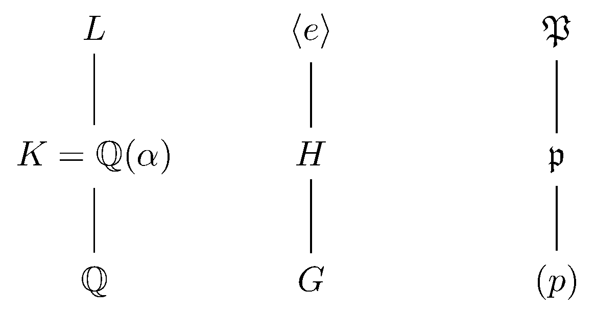

May 4th
Today I learned another application of Cheboratev's theorem: irreducible polynomials have on average one root modulo primes. Here's the statement we'll build towards.
Theorem. Fix $f\in\QQ[x]$ irreducible and define $n_p(f)$ to be the number of roots of $f(x)\pmod p$ for primes $p.$ Then \[\lim_{N\to\infty}\frac1{\pi(N)}\sum_{p\le N}n_p(f)=1.\]
This statement will require the natural density version of Chebotarev, but we can state the result using only Dirichlet density. We will do this after the proof.
Anyways, let's begin attacking this directly. We want to talk about the factorization of an irreducible polynomial modulo primes via Chebotarev, so we use Dedekind-Kummer to connect the two. For all but finitely many primes (which we may ignore because we will be summing over all primes), we can associate the factorizations\[f(x)\pmod p\quad\longleftrightarrow\quad p\mathcal O_{\QQ(\alpha)},\]where $\alpha$ is some root of $f(x).$ In particular, $f(x)$ has a linear factor where $\mf p\mid p\mathcal O_{\QQ(\alpha)}$ has $f(\mf p/p)=1.$ To connect this with Frobenius elements, we need to move into the Galois closure of $\QQ(\alpha),$ so we construct the following tower.

Namely, we let $L/\QQ$ be a normal field extension containing $K,$ and define $G:=\op{Gal}(L/\QQ)$ and $H:=\op{Gal}(L/K).$ Then for primes $p$ of $\QQ,$ we study primes $\mf p\subseteq\mathcal O_K$ above them by picking a random prime $\mf P\subseteq\mathcal O_L$ with Frobenius $\varphi_p$ and then tracking its action downwards.
As an aside, we remark it makes the argument somewhat easier if the prime $\mf P$ is chosen randomly so that Chebotarev says we are basically choosing a random element of $G$ as our Frobenius. Alternatively, we could sequence the conjugacy class and choose the prime $\mf P$ in sequence down the conjugacy class to get the same equidistribution. We won't be formal about this.
Anyways the point is that we can study the splitting behavior of unramified primes $p$ by studying $H\backslash G/\langle\varphi_p\rangle$; this is tracking the Frobenius in an intermediate field. Namely, we can correspond primes $\mf p\subseteq\mathcal O_L$ above $p$ with $f(\mf p/p)=1$ with a coset $H\sigma\in H\backslash G$ such that \[H\sigma=H\sigma\varphi_p.\]Now, this turns the question into a purely algebraic one.
We quickly track everything back through. Then, for all but finitely many primes, $f(x)\pmod p$ has $n_p(f)$ roots if and only if $p\mathcal O_K$ has $n_p(f)$ degree-$1$ primes (ignoring ramification and Dedekind-Kummer bad primes) if and only if\[n_p(f)=\#\{H\sigma\in H\backslash G:H\sigma=H\sigma\varphi_p\}.\]Checking what we want, we note that, for fixed $N$ large,\[\lim_{N\to\infty}\frac1{\pi(N)}\sum_{p\le N}n_p(f)=\lim_{N\to\infty}\frac1{\pi(N)}\sum_{p\le N}\sum_{\varphi\in G}1_{\varphi_p}(\varphi)n_p(f).\]Note that we don't have to worry too much about convergence issues because all terms are positive. Using the above, this rearranges into\[\lim_{N\to\infty}\frac1{\pi(N)}\sum_{p\le N}n_p(f)=\lim_{N\to\infty}\sum_{\varphi\in G}\left(\frac1{\pi(N)}\sum_{p\le N}1_{\varphi_p}(\varphi)\right)\#\{H\sigma\in H\backslash G:H\sigma=H\sigma\varphi\},\]ignoring as many finitely many primes as necessary. By Chebotarev with natural density, the inner sum has limit $1/|G|,$ and the remaining terms don't care about $N.$ In particular, we are left to compute\[\frac1{\#G}\sum_{\varphi\in G}\#\{H\sigma\in H\backslash G:H\sigma=H\sigma\varphi\}.\]This is now an algebra problem. We do this with the lemma that is not Burnside's, which we prove.
Lemma. Suppose a group $G$ acts on (the right of) a set $S.$ Then the number of orbits of $S$ under the action of $G$ is equal to \[\frac1{\#G}\sum_{g\in G}\#\{s\in S:s=sg\}.\]
In order to be able to change the order of summation, we introduce a second sum and write this as\[\sum_{(g,s)\in G\times S}1_{s=sg}=\sum_{s\in S}\#\{g\in G:s=sg\}.\]Now, fixing $s\in S,$ $\{g\in G:s=sg\}$ is the stabilizer of $s,$ a subgroup of $G.$ We can talk intelligently about its index in $G$ because $sg=sh$ if and only if $s=shg^{-1}$ if and only if $hg^{-1}$ is in the stabilizer if and only if $h$ and $g$ are in the same coset. Namely, its index is the size of the orbit of $s.$ Thus,\[\frac1{\#G}\sum_{g\in G}\#\{s\in S:s=sg\}=\sum_{s\in S}\frac1{[G:\{g\in G:s=sg\}]}=\sum_{s\in S}\frac1{\#sG}.\]To finish, each orbit of $S$ named $\mathcal O$ is repeated $\#\mathcal O$ times in the sum, and each of these times contributes $1/\#\mathcal O,$ so each orbit contributes $1$ to the sum. Thus, the sum is the number of orbits of $S$ under the action of $G.$ $\blacksquare$
To complete the proof, we note that $G$ acts on $H\backslash G$ by right multiplication, and this action is transitive because $H\backslash G$ is the orbit of $H$ under this action. Thus, the lemma that is not Burnside's says\[\frac1{\#G}\sum_{\varphi\in G}\#\{H\sigma\in H\backslash G:H\sigma=H\sigma\varphi\}=1\]because we just established there is only one orbit. This completes the proof. $\blacksquare$
Because natural density is hard, we provide an analogous statement using Dirichlet density. We can borrow from the proof the evaluation of\[\frac1{\#G}\sum_{\varphi\in G}\#\{H\sigma\in H\backslash G:H\sigma=H\sigma\varphi\}=1,\]but now this $1/\#G$ represents the Dirichlet density of a particular Frobenius (chosen randomly from the conjugacy class). That is, what we know is that\[1=\sum_{\varphi\in G}\left(\lim_{s\to1^+}\frac{\sum_{p,\varphi_p=\varphi}1/p^s}{\sum_p1/p^s}\right)\#\{H\sigma\in H\backslash G:H\sigma=H\sigma\varphi\}.\]Rearranging the sum back outwards (all terms are positive still), what we know is\[1=\lim_{s\to1^+}\sum_p\frac{\#\{H\sigma\in H\backslash G:H\sigma=H\sigma\varphi_p\}}{p^s}\bigg/\sum_p\frac1{p^s},\]which is\[1=\lim_{s\to1^+}\sum_p\frac{n_p(f)}{p^s}\bigg/\sum_p\frac1{p^s},\]using the other work established in the proof. This statement is not as pretty as the one we proved, but at least it makes some intuitive sense (we are "weighting'' primes by $n_p(f)$), and it doesn't use natural density.
Theorem. Fix $f\in\QQ[x]$ irreducible and define $n_p(f)$ to be the number of roots of $f(x)\pmod p$ for primes $p.$ Then \[\lim_{s\to1^+}\sum_p\frac{n_p(f)}{p^s}\bigg/\sum_p\frac1{p^s}=1.\]
This statement follows from the above discussion. $\blacksquare$
As some commentary, I am a bit amused by the path we took this final statement. The original theorem is more or less the statement that we want to prove: it is a very natural interpretation of "average.'' Running through the proof, there was a point where we needed natural density, and swapping out the natural density with Dirichlet density gave the above. Namely, it is not immediately obvious why the above is the correct Dirichlet form of "average,'' but after having seen it, it makes sense.
In other news, may the 4th be with you.